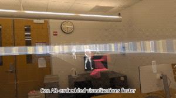
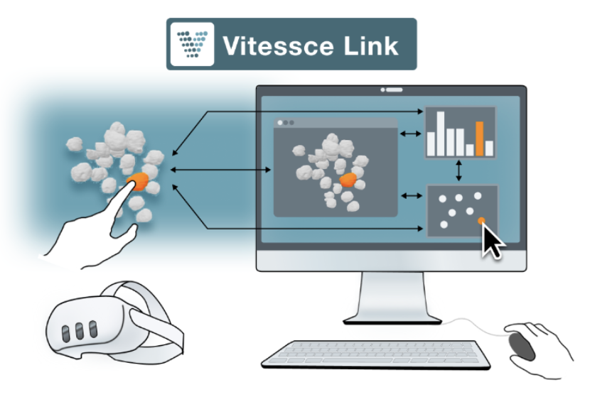

|
Generative Proxy: Synthesizing Proxy-Based Interfaces for Real-World Interaction Across AR Glasses
Xianhao Carton Liu, William Chastek, Eric J Gonzalez, Mar Gonzalez-Franco,
Chen Zhu-Tian |
|
|
 |
Can AR Embedded Visualizations Foster Appropriate Reliance on AI in Spatial Decision-Making? A Comparative Study of AR X-Ray vs. 2D Minimap
Xianhao Carton Liu, Difan Jia, Tongyu Nie, Evan Suma Rosenberg,
Victoria Interrante, Chen Zhu-Tian |
|
Reality Proxy: Fluid Interactions with Real-World Objects in MR via Abstract Representations
Xiaoan Liu, Difan Jia, Xianhao Carton Liu, Mar Gonzalez-Franco, Chen Zhu-Tian
|
|
|
 |
Vitessce Link: A Mixed Reality and 2D Display Hybrid Approach for Visual Analysis of 3D Tissue Maps
Eric Mörth, Morgan L Turner, Cydney Nielsen, Xianhao Carton Liu, Mark Keller, Lisa Choy, John Conroy, Tabassum Kakar, Clarence Yapp, Alex Wong, Peter Sorger, Liam McLaughlin, Sanjay Jain, Johanna Beyer, Hanspeter Pfister, Chen Zhu-Tian, and Nils Gehlenborg
|
|
University of Minnesota
Computer Science PhD Student
2024.08 ~ present
Twin Cities, MN, USA PhD Student in Human Computer Interaction Supervisor: Zhu-Tian Chen |
|
|
Harvard University
2024.01 ~ 2024.05
Cambridge, MA, USA Visiting Undergraduate Student Intern Supervisor: Zhu-Tian Chen and Hanspeter Pfister |
|
|
Stanford University
2023.07 ~ 2023.09
California, USA Undergraduate Summer Intern Supervisor: Junrui(Jackie) Yang and James Landay |
|
|
Zhejiang University
2021.10 ~ 2023.05
Hangzhou, China Undergraduate Research Student Supervisor: Lingyun Sun and Zejian Li |
|
|
Zhejiang University
B.Eng. in
Turing Class
(Honor)
2020.09 ~ 2024.06
Hangzhou, China Undergraduate Student Chu Kochen Honors College Morningside Culture China Scholars Program |